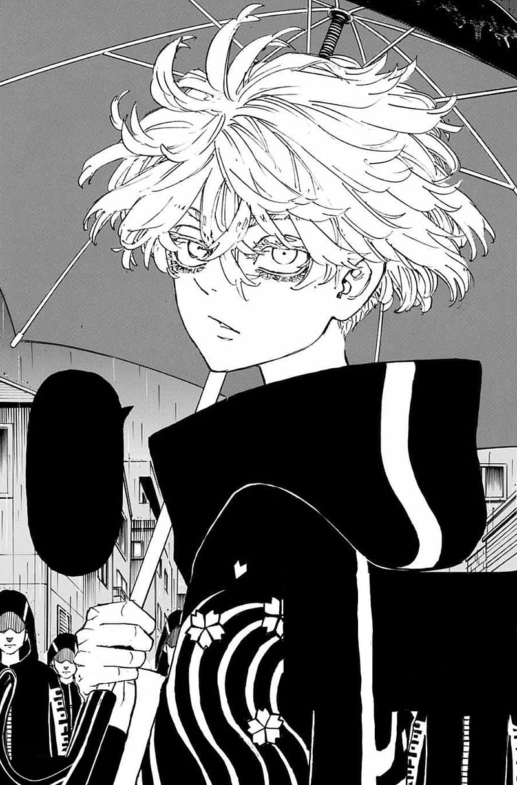

Kawaragi Senju is a character from the manga series: Tokyo Revengers. She was formally the leader of the gang Brahman, one of the three deities of the Kanto region and was know as the unmatched. She is currently the fifth division captain of the second generation Tokyo Manji Gang.

1% -----------------------------------------------------------------How cool is Senju??---------------------------------------------------------------- 100%